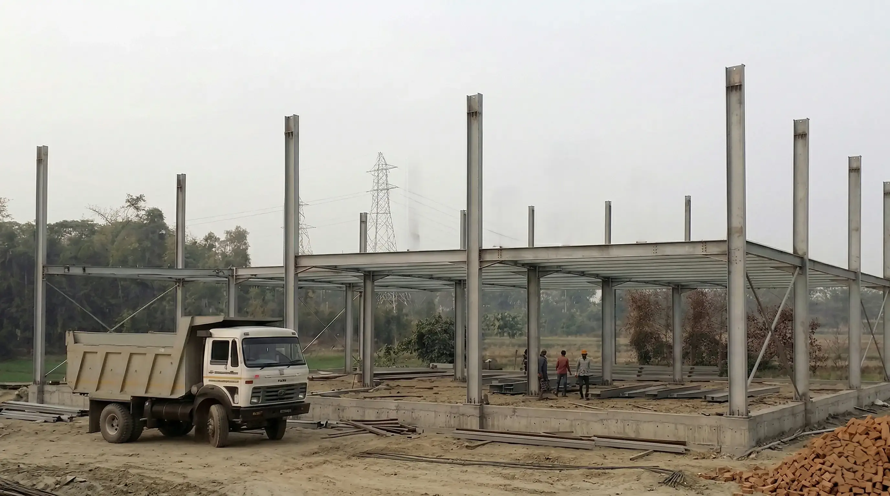
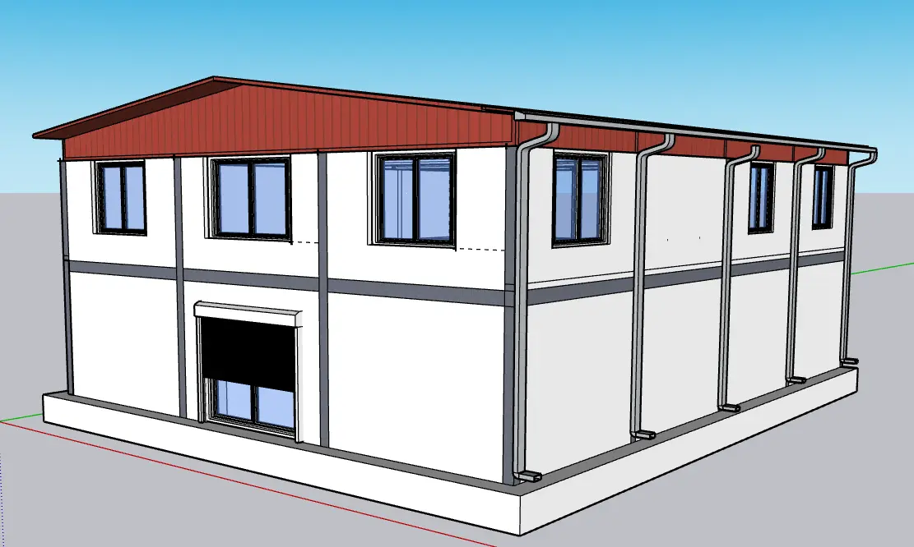
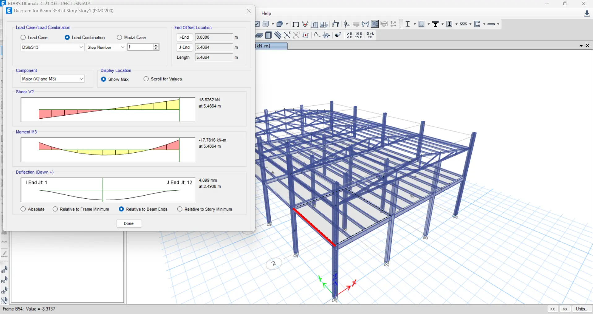
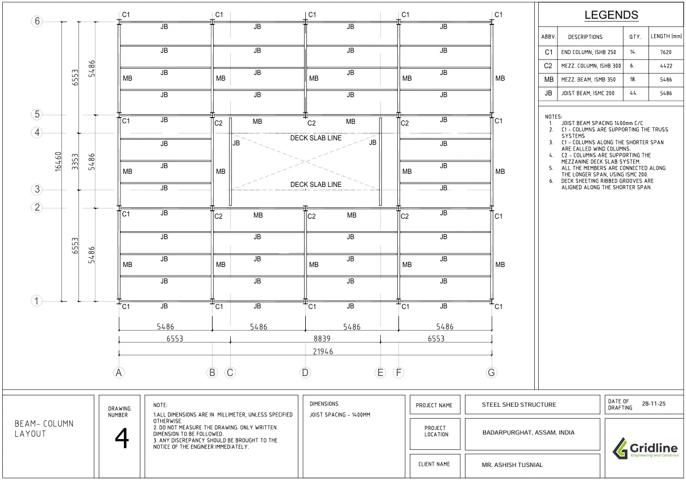
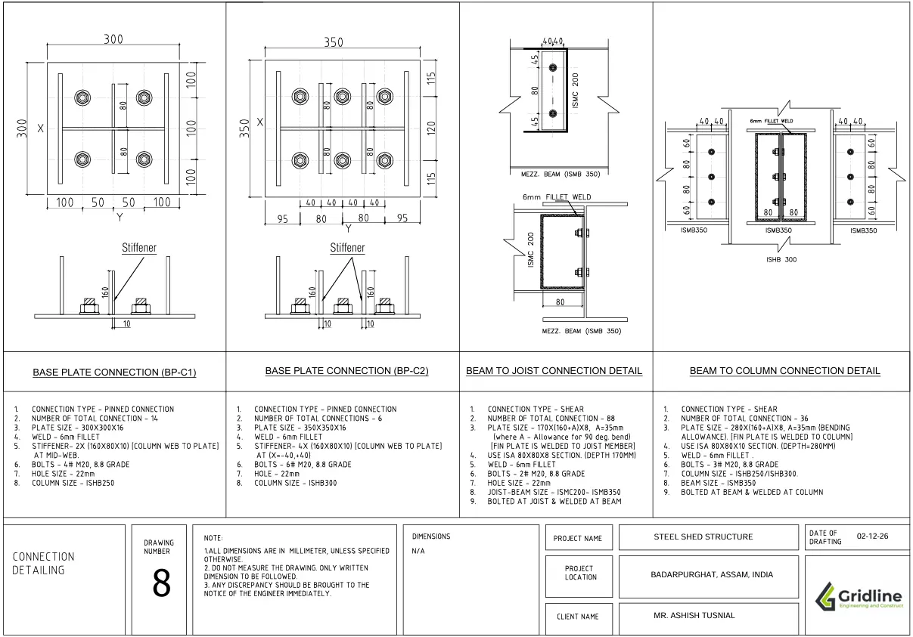
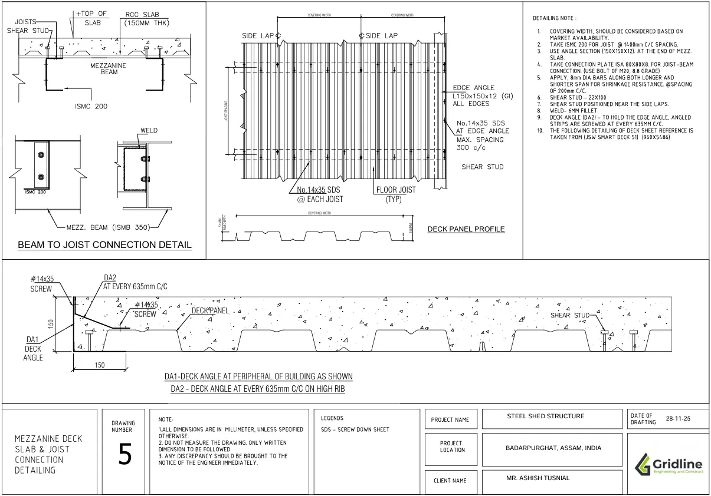

G+1 Steel Truss Industrial Shed:
Seismic Zone V Structure
in Badarpurghat, Assam

01 / The Client's BriefWhat the client needed
An industrial operator in Badarpurghat, Assam required a G+1 steel truss shed spanning 54 ft × 72 ft with a mezzanine office floor at the upper level. The site sits in Seismic Zone V — the highest seismic hazard classification in India — and in a region subject to significant wind loading under IS 875. The client needed a structure that was both code-compliant and economically optimised: every kilogram of steel had to earn its place.
The brief specified a clear span at ground level for industrial operations — no intermediate columns disrupting the working floor — with a composite mezzanine deck at the first level providing office and ancillary space. The roof system required cold-formed Z-purlins to support profiled sheet roofing with adequate slope for drainage in Assam's heavy monsoon conditions.
"Zone V is unforgiving. Every connection, every weld, every bolt group has to be designed for the full seismic demand — not estimated, not scaled from a similar project elsewhere."
Complete structural drawings, connection details, purlin schedules, and a total steel tonnage breakdown were required for procurement and fabrication.
02 / The Design ChallengeWhere the difficulty lived
The purlin-to-top-chord connection of a truss system introduces a stability problem that is frequently underestimated on industrial shed projects: cold-formed Z-purlins spanning between truss top chords are susceptible to lateral-torsional buckling under wind uplift and asymmetric loading, particularly when the roof sheet provides insufficient lateral restraint. To resolve this, sag rods were provided between purlins at mid-span — rod systems that tie adjacent purlins laterally and brace the compression flange against out-of-plane movement. The truss top chord was designed to accommodate the sag rod anchor forces as additional point loads, requiring the top chord to be sized for combined axial compression and bending rather than pure axial alone. Wind load, ceiling load, and machine load from the mezzanine-level mechanical equipment were applied as simultaneous load cases in ETABS to identify the governing combination for each truss member.
The mezzanine floor introduced the challenge of managing lateral forces across two structural levels. At mezzanine level, the deck transfers horizontal forces into the supporting steel frame, which must then carry them to the foundation as a complete lateral load path. In Zone V, this load path must be explicit and unambiguous — every element in the chain sized for the full seismic demand without relying on the roof diaphragm for secondary relief.
03 / Our SolutionHow Gridline delivered
The structure was fully modelled in ETABS with primary framing using ISHB 250/300 columns and ISMB 350 beams for the main frame. All IS 800:2007 load combinations were applied — dead, live, wind (IS 875 Part 3, basic wind speed for Assam), earthquake (IS 1893:2016, Zone V, importance factor 1.5 for industrial occupancy), ceiling loads, and machine loads — with the truss members checked under the governing combination for each chord and internal member.
Lateral stability of the mezzanine bay was resolved by providing 12mm diameter diagonal tension rods in the steel bays at mezzanine level — a cross-bracing system that transfers horizontal seismic and wind forces directly to the foundation without relying on frame bending action. This approach reduced the required column and beam sections in the braced bays, contributing directly to the overall tonnage economy. ISMC 200 sections were used for the mezzanine joist beams, providing adequate section modulus at an efficient weight per metre. For the mezzanine deck flooring, TATA Structura composite sheeting was specified — a proprietary profiled steel deck system that acts compositely with the concrete topping, reducing slab thickness and dead load while providing a robust, durable industrial floor surface.
The sag rod system was detailed at mid-span of each purlin bay, with rod diameter and thread engagement sized for the calculated lateral force from the purlin compression flange. The full fabrication drawing set — primary frame connections, purlin cleat details, sag rod schedules, diagonal bracing connections, and a member-by-member steel section schedule totalling 32.62 T — was issued to the fabricator for shop production.

From analysis to delivered drawings





Need an industrial steel structure designed?
From portal frames to complex multi-level industrial sheds — Gridline delivers IS 800:2007-compliant steel structures with full ETABS analysis, optimised tonnage, and fabrication-ready drawings. Zone V seismic design capability.